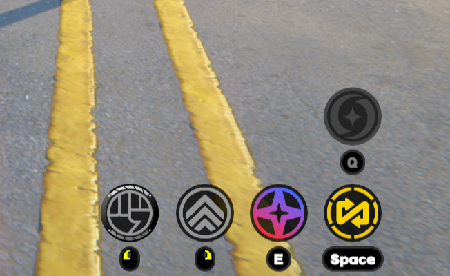
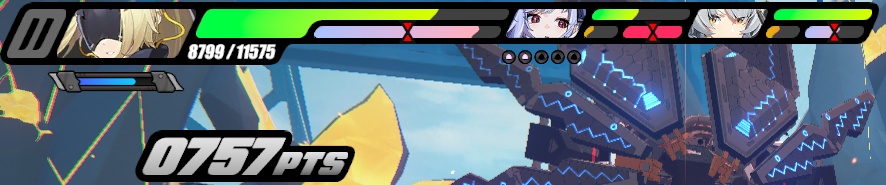

Welcome to the Game Mechanics page
This page contains a brief overview of Zenless Zone Zero's combat mechanics, along with some screenshots to help the reader better understand the information. The mechanics might be difficult to understand when you first start playing, so this page is just ment to explain things in a simpler perspective.
Actions
In combat you can preform a selection of actions at your leisure, said actions are as follows; Basic Attack, Skill, dodge/dash, swap/ parry, and Ultimate. you can only use these actions durring combat, and there are no real cooldowns on the actions, but there are energy meters for both the Skill (EX Skill) and Ultimate (EX Ultimate), refer to the image below for better understanding.
(from left to right, Basic Attack, dash/dodge, skill/EX Skill, swap Character/parry. Ultimate/EX Ultimate, Top)
EX Abilities
EX Abilities are easily explained as a stronger version of both the Skill and Ultimates, doing more damage, strengthining the character in some way, or allowing a character to deal damage even when they are not on the field. You will know when the EX Abilitiy can be used when the icon changes color, you can also see how much energy you currently have for your EX Abilities by looking in the top-left corner of the screen (see image below).
The image above shows the EX Skill meter with the pink and blue gradent bar unter the current character's health bar, and the EX Ultimate meter in numbers (3000 is when the meter is full)